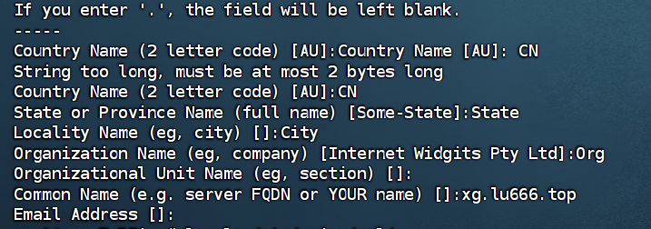
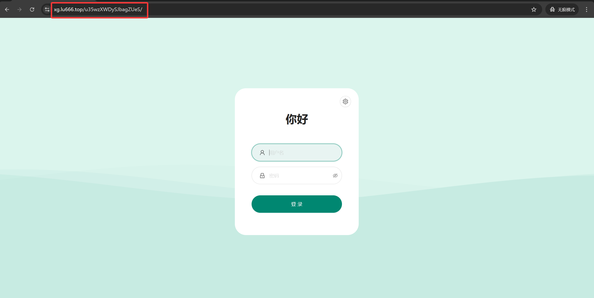

🕓2026年04月29日
视频教程：▶https://youtu.be/b79BM2OF4jY?si=cCHbnLt-URjAiqJ4
如果你已经完成了：
那么接下来这一期非常关键👇
👉 面板安全加固 + 反向代理隐藏 + HTTPS加密访问
很多人其实就卡在这一阶段。
一、为什么一定要做 Nginx 反代？
默认情况下，3X-UI 面板的访问方式是：
复制 https://IP:端口/admin
这个方式有几个明显问题：
👉 本质上就是：把后台直接暴露在互联网上
🎯本教程要实现的效果
配置完成后，访问方式会变成：
复制 https://你的域名/自定义路径
最终实现：
二、环境准备
1、域名一个，并托管到 Cloudflare
推荐在 Namesilo 进行购买（新用户1美元优惠券：kejixiaolu），因为他的 WHOIS 隐私 是免费的，可以适当的进行一下隐私保护，而且域名还都挺便宜的。（域名可以在 Namesilo 解析，也可以将域名托管到 Cloudflare ，解析更快。）
2、一台境外 VPS 主流系统。
例如：Debian 12+ / Ubuntu 22.04+ / CentOS 8+
六六云VPS注册网址：https://kjxl.cc/666clouds（双ISP，支持tiktok）
全站九折优惠：XL666
年付七折优惠：year30off
Vultr 注册网址：https://kjxl.cc/vultr （按时计费，最低6$/月。）
搭建前，先检测服务器IP是否被封，确认IP可用。
已经解析的域名，Win+R 输入 CMD 回车：键入ping 空格输入你的域名，检查一下是否可以 ping 通。
3、下载并安装 FinalShell SSH 工具
Windows、macOS、Linux 版下载地址：点击下载
4、请先确认以下条件，否则容易失败：
👉 如果面板本身都打不开，建议先修复基础环境。
1. 登录服务器
使用 SSH 工具连接服务器。
2. 更新系统
复制
sudo apt update
sudo apt upgrade -y
3. 安装必要工具
复制
sudo apt install -y nginx certbot python3-certbot-nginx openssl
sudo systemctl enable nginx
sudo systemctl start nginx
三、安装 3X UI 后端
1. 使用官方安装脚本
复制 bash <(curl -Ls https://raw.githubusercontent.com/MHSanaei/3x-ui/main/install.sh)
2. 安装选项选择
端口：按 Enter 使用默认随机端口（例如 30235）
SSL 证书：选择 2（IP 证书，临时使用）
3. 安装完成后的信息
脚本会显示：
复制
Panel Installation Complete!
Username: xxxxx
Password: xxxxx
Port: 30235
WebBasePath: 6YxarJjUrIIGZZFwaa
Access
URL: https://your-ip:30235/6YxarJjUrIIGZZFwaa
记录这些信息，后续配置需要。
4、检查 3X UI 是否运行
复制 sudo ss -tlnp | grep 端口
看到监听状态说明正常。
3、放行端口
复制 iptables -I INPUT -p tcp --dport 端口 -j ACCEPT
四、生成自签名证书
因为 IP 证书有效期短，我们先用自签名证书配置 Nginx。
1. 创建证书目录
复制 sudo mkdir -p /etc/nginx/ssl
2. 生成证书
复制 sudo openssl req -x509 -nodes -days 365 -newkey rsa:2048 -keyout /etc/nginx/ssl/3x-ui.key -out /etc/nginx/ssl/3x-ui.crt -subj "/C=CN/ST=State/L=City/O=Org/CN=xg.lu666.top"
图示：OpenSSL 证书生成命令

3. 验证文件是否存在
复制 ls -la /etc/nginx/ssl/
应该看到 3x-ui.crt 和 3x-ui.key。
五、配置 Nginx 反代
1. 创建配置文件
复制 sudo nano /etc/nginx/sites-available/3x-ui
2. 粘贴配置内容
复制
upstream 3x_ui_backend {
server 127.0.0.1:30235;
}
server {
listen 80;
server_name your-domain.com www.your-domain.com;
location / {
return 301 https://$server_name$request_uri;
}
}
server {
listen 443 ssl http2;
server_name your-domain.com www.your-domain.com;
ssl_certificate /etc/nginx/ssl/3x-ui.crt;
ssl_certificate_key /etc/nginx/ssl/3x-ui.key;
ssl_protocols TLSv1.2 TLSv1.3;
ssl_ciphers HIGH:!aNULL:!MD5;
ssl_prefer_server_ciphers on;
location /6YxarJjUrIIGZZFwaa/ {
proxy_pass http://3x_ui_backend/6YxarJjUrIIGZZFwaa/;
proxy_ssl_verify off;
proxy_http_version 1.1;
proxy_set_header Host $host;
proxy_set_header X-Real-IP $remote_addr;
proxy_set_header X-Forwarded-For $proxy_add_x_forwarded_for;
proxy_set_header X-Forwarded-Proto $scheme;
proxy_set_header Upgrade $http_upgrade;
proxy_set_header Connection "upgrade";
proxy_connect_timeout 60s;
proxy_send_timeout 60s;
proxy_read_timeout 60s;
proxy_buffering off;
proxy_request_buffering off;
}
}
注意：把 your-domain.com 换成你的真实域名；
把 30235 和 6YxarJjUrIIGZZFwaa 换成你的实际端口和路径。
3. 保存并退出
Ctrl + O → Enter → Ctrl + X。
4.启用配置
复制
sudo ln -s /etc/nginx/sites-available/3x-ui /etc/nginx/sites-enabled/
sudo rm /etc/nginx/sites-enabled/default
5. 测试配置
复制 sudo nginx -t
6. 重载 Nginx
复制 sudo systemctl reload nginx
六、浏览器验证
1. 访问域名
复制 https://your-domain.com/6YxarJjUrIIGZZFwaa/
2. 证书警告
因为用的是自签名证书，浏览器会提示“不受信任”。点击“高级” → “继续访问”即可。
3. 登录 3X UI
使用安装时显示的用户名和密码登录。
图示：浏览器访问 3X UI 登录页

七、升级到真实 SSL 证书
1. 停止 Nginx
复制 sudo systemctl stop nginx
2. 申请 Let's Encrypt 证书
复制 sudo certbot certonly --standalone -d your-domain.com
输入邮箱地址，同意条款。
3. 启动 Nginx
复制 sudo systemctl start nginx
4. 更新 Nginx 配置
复制 sudo nano /etc/nginx/sites-available/3x-ui
把证书路径改成：
复制
ssl_certificate /etc/letsencrypt/live/your-domain.com/fullchain.pem;
ssl_certificate_key /etc/letsencrypt/live/your-domain.com/privkey.pem;
5. 测试并重载
复制
sudo nginx -t
sudo systemctl reload nginx
6. 验证
访问：https://域名/路径，应该看到绿色锁图标。
复制 https://your-domain.com/6YxarJjUrIIGZZFwaa/
八、常见问题与解决
问题1：访问显示 404
问题2：循环重定向
问题3：证书申请失败
问题4：端口冲突
问题5：unable to resolve host
📌 九、总结
通过这篇教程，你已经完成了 3X-UI 面板部署中的关键一步：
如果你能够顺利完成这些操作，说明你已经超过大多数刚入门的用户。
⚠️ 注意事项
💬 写在最后
这个搭建过程适合初学者，步骤清晰，问题少。如果你在搭建过程中遇到其他问题，可以在评论区留言，我会尽力帮助解决。
希望这篇文章对你有帮助！如果觉得有用，记得点赞收藏哦~
🚀 下一期预告
👉 3X-UI 两层架构搭建教程（新手可直接照做）
如果你对稳定性和长期使用有更高要求，这一部分会非常关键。